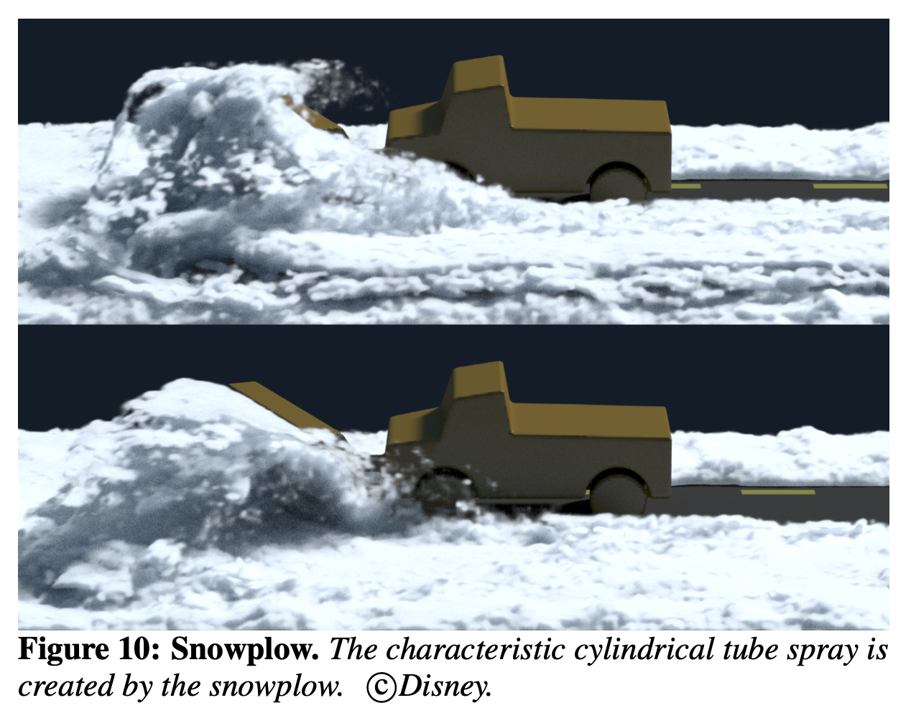
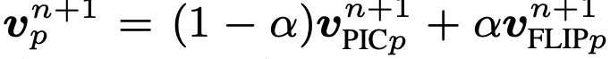
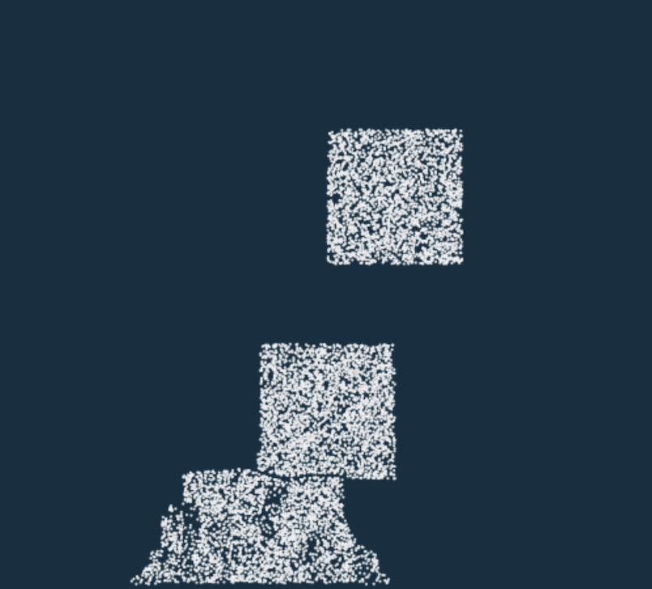
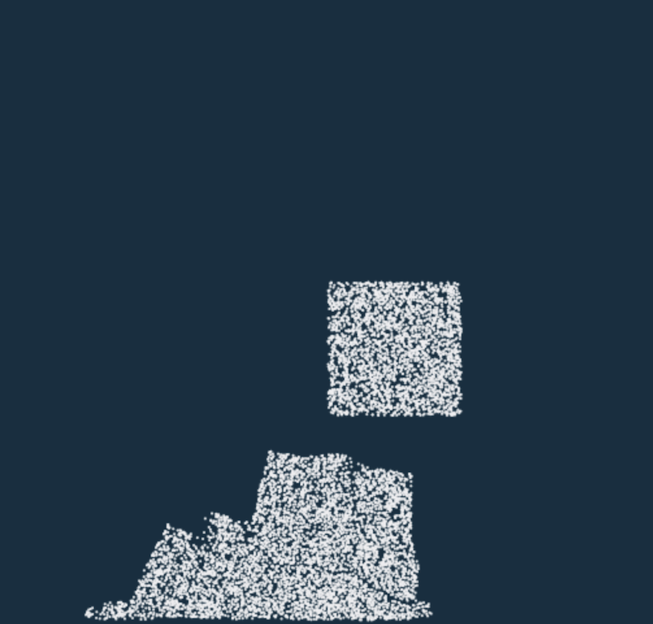
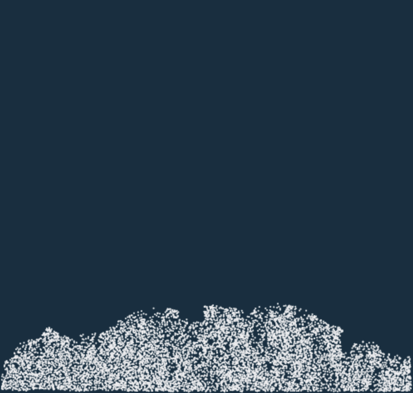

Snow simulation has been a challenging task in the field of computer graphics. Due to its special properties involving both solid snow and water, rendered results from the existing methods still contains visual artifacts. For example, as shown in Figure 1, the compression of snow on the road is largly ignored by the algorithm. In this project, we implement material point method (MPM) [1] for snow simulation using taichi programming language [2]. Besides reimplement the snow simulation algorithm, we show that the snow compression issue during object interactions can be allivated.
|

|
In this Section, we mainly report our current progress and results. Since we aim for reimplementing a comprehensive snow simulation which includes 2D and 3D snow simulation, we first takle the 2D problem.
In the begining of the simulation, we initalize the position of particles to form the desired shape. For example, we create 3 squares in different position as in Figure 2. We then initialize particle velocity to 0, deformation gradient to 2D identity matrix, plastic deformation to 1, affine velocity field to 0 matrix.

|
For each of the 20000 frames, we repeat the following steps:

|
|  |

|
After the following progress, we get the following simulation:
|  |
|  |
|

|
The following videos show case our 2D snow simulation with different shape of snow, forces applied to the snow, and different stiffness of the snow.
The first video is two snow balls hitting on each other. The constructed shapes are two circles instead of squares in the example above. We also increase the hardening coefficient to simulate that snow gets harder when compressed. Therefore when two balls collapse, the snow particles are relatively stuck together compared to the above example in which we did not increase the hardening coefficients. Notice that the particles from one ball will stick to another ball, due to the stickiness property of the snow.
The hardening coefficient is the force between snow particles. If we increase the force the particles will be closer and then become stiffer visually. The formula for the hardening coefficient is shown below:

|
For the second video, it shows three snowballs hitting the wall. We apply three equally horizontal forces to each of them. The top small ball has the smallest hardening coefficient and the coefficient increase for the two snowballs below. Therefore the top snowball breaks up more compared to the two below.
For the third video, it demonstrates the situation of snowfall. Notice that the yellow snowball with a large hardening coefficient will go through the other snow particles.
We present the progress and results in the from of presentation video, and slide is linked here.
For the milestone, we familiar with taichi language. We also implement the 2D snow simulation based on MPM. In the simulation, the individual particles are able to fall off snow-like.
Before we move on to the 3D simulation of snow, we need to solve several problems. Although we take in account of elastic and plasticity of snow, we are treating snow particles visually quite similar as sand particles. No matter how hard is the snowball, it should always break apart when hitting the wall/ground. However, the above videos do not show the desired behavior.
The second problem is that in the second video, the snowballs should stick to the wall and then slide down. However, the snowballs hit the wall and then bounce back to the ground.
Also, the current simulation has problem of repulsive particles. Specifically, when all the particles fall on the ground, they will start to repell each other, making them spaced evenly in the end and change the overall shape of the snow on the land. Figure 4 shows the described problem.

|
We are planning on solving these problems in the following days.

ganqx2001 at berkeley
This is a place holder for contribution.
liyijun at berkeley
This is a place holder for contribution.
xuyimo at berkeley
This is a place holder for contribution.
shijiayang at berkeley
This is a place holder for contribution.
[1] Stomakhin, Alexey, et al. "A material point method for snow simulation." ACM Transactions on Graphics (TOG) 32.4 (2013): 1-10.
[2] Hu, Yuanming, et al. "Taichi: a language for high-performance computation on spatially sparse data structures." ACM Transactions on Graphics (TOG) 38.6 (2019): 1-16.